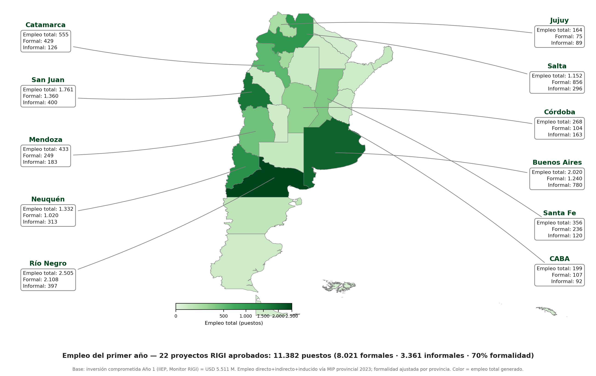

Seguimiento de los proyectos adheridos al Régimen de Incentivo a las Grandes Inversiones y estimación de su efecto de corto plazo (primer año) sobre el producto, el valor agregado y el empleo —formal e informal— con apertura provincial, mediante un modelo insumo-producto provincial.
El empleo se descompone en directos, indirectos y inducidos. La banda por sensibilidad del multiplicador de empleo Tipo II (1,80–2,18) va de a puestos. El producto y el VA no dependen del multiplicador.
Shock: USD M de inversión comprometida en Año 1 (de USD M anunciados en proyectos aprobados). El impacto del primer año capta la obra, no la producción futura de los yacimientos.
| Provincia | Empleo | Directo | Indir. | Induc. | Formal | Inform. | % form. | % emp. prov. |
|---|---|---|---|---|---|---|---|---|
| TOTAL |
| Sector | Empleo total | Directo | Indirecto | Inducido | Formal |
|---|---|---|---|---|---|
| TOTAL |
La obra directa se concentra en construcción, minería y energía; el indirecto aparece en comercio, servicios y proveedores industriales; el inducido (gasto de los sueldos) llega sobre todo a comercio, otros servicios y agroalimentos.
La inversión es minera y petrolera, pero el empleo del primer año se concentra en construcción (fase de obra) y, donde no hay proyecto propio, en comercio y servicios por el efecto de derrame.

Modelo MIP Provincial Argentina 2023 (Michelena, Herrera Gómez y Elosegui) — 24 provincias × 20 sectores. Efectos directos, indirectos e inducidos.
Alcance y límites. Es un ejercicio de demanda en equilibrio parcial: supone estructura productiva y precios relativos de 2023, oferta elástica y ausencia de desplazamiento (crowding-out). Estima el primer año (fase de obra), no la producción futura ni el impacto fiscal o de divisas. Los proyectos en evaluación se consideran potencial, no impacto corriente.
Fuentes. Monitor RIGI–IIEP (inversión comprometida por proyecto); MIP Provincial Argentina 2023 (Michelena, G., Herrera Gómez, M. y Elosegui, P.); ENGHo 2017-18; matriz de comercio interprovincial; tasas de formalidad por provincia y sector.